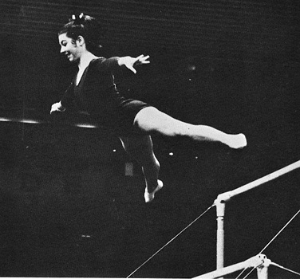

Adele Gleaves (USA)
1970 World Championships Team
Member
1971 Pan American Games V Bronze Medalist

Adele was born in Louisville,
KY. She was twice the Kentucky high school gymnastics champion and was
named her state's high school athlete of the year in 1971. A transfer from
the University of Louisville, Adele graduated from Western Kentucky University
in 1976 with a degree in mass communications. She worked as a part-time DJ
at WAKY, a Louisville radio station, in the late 1970s. Adele died of
cancer in 1989 at the age of 35, and left behind
a husband and 3-year-old daughter.
Competition Results
1968
Kentucky High School Championships: 1st AA, 1st V, 1st UB
1970
AAU Championships: 6th AA, 1st V
Kentucky High School Championships: 1st Team, 1st AA, 1st V, 1st UB, 1st B, 1st FX
World Championships: 7th Team, 33rd AA
1971
Pan American Games: 1st Team, 4th AA, 3rd V, 6th UB, 6th FX
USGF Championships: 10th AA, 1st V
1973
AIAW Championships: 1st AA, 1st UB, 3rd V, 4th FX, 5th B
Scarborough Winstonettes Invitational: 5th AA
University Games: 5th Team, 20th AA
1974
AIAW Championships: 5th AA, 2nd FX, 3rd B
AIAW Region II Championships:
3rd Team, 1st AA, 1st V, 1st UB, 1st B, 1st FX
1975
Kentucky Women's Intercollegiate Conference Championships:
1st Team, 1st AA, 1st V, 1st UB, 1st B, 1st FX
1976
AIAW Region II Championships: 1st Team, 1st AA, 1st V, 1st B, 1st FX
This page was created on November
05, 2006 and was last updated on February 15, 2021.
© Gymn Forum